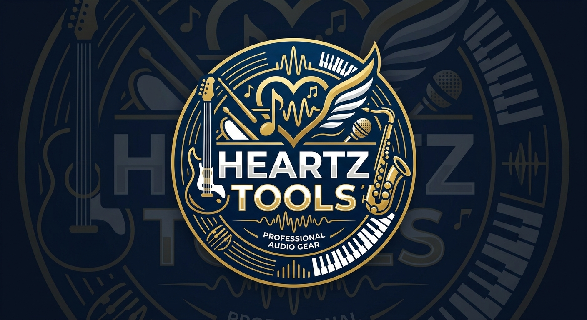

NUESTRA HISTORIA

Pasión por la música desde hace más de una década
Ubicados en Santiago, llevamos 11 años siendo el punto de encuentro para músicos profesionales y aficionados de toda la zona.
Comenzamos como una tienda 100% presencial y, gracias a la confianza de nuestros clientes, hemos crecido para ofrecer un catálogo especializado con más de 340 productos, que incluye guitarras, bajos, baterías, teclados y accesorios.
Nuestro equipo está conformado por especialistas siempre dispuestos a asesorarte. Ya sea que busques tu primer instrumento o necesites renovar tu equipo de sonido, en Heartz Tools hablamos tu mismo idioma.